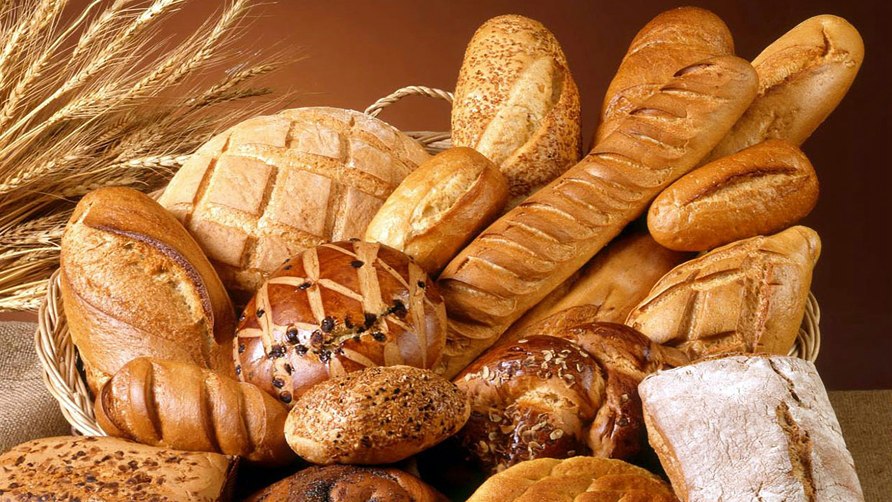

Beginner Tips
Learn about basic tools, common ingredients, measuring, and simple ways to prepare before baking.
Explore tipsSupportive beginner baking and allergy-aware ideas
Baking should feel possible!
Big Sis Bakes is here to help you navigate the world of baking with easy recipes and helpful tips.
Whether you are a beginner or looking to improve your skills, Big Sis Bakes has something for you.

Learn about basic tools, common ingredients, measuring, and simple ways to prepare before baking.
Explore tipsFind approachable treats and snacks with clear directions that do not assume years of experience.
View recipesExplore possible ingredient substitutions and learn when different swaps may work best in a recipe.
Find swaps